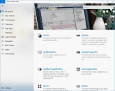

Sound
There are many ways to use sound to enhance your app. You can use to sound to supplement other UI elements, enabling users to recognize events audibly. Sound can be an effective user interface element for people with visual disabilities. You can use sound to create an atmosphere that immerses the user; for example, you might play a whimsical soundtrack in the background of puzzle game, or use ominous sound effects for a horror/survival game.
Examples
| WinUI 2 Gallery | |
|---|---|
 |
If you have the WinUI 2 Gallery app installed, click here to open the app and see Sound in action. |
Sound Global API
UWP provides an easily accessible sound system that allows you to simply "flip a switch" and get an immersive audio experience across your entire app.
The ElementSoundPlayer is an integrated sound system within XAML, and when turned on all default controls will play sounds automatically.
ElementSoundPlayer.State = ElementSoundPlayerState.On;
The ElementSoundPlayer has three different states: On Off and Auto.
If set to Off, no matter where your app is run, sound will never play. If set to On sounds for your app will play on every platform.
Enabling ElementSoundPlayer will automatically enable spatial audio (3D sound) as well. To disable 3D sound (while still keeping the sound on), disable the SpatialAudioMode of the ElementSoundPlayer:
ElementSoundPlayer.SpatialAudioMode = ElementSpatialAudioMode.Off
The SpatialAudioMode property can takes these values:
- Auto: Spatial audio will turn on when sound is on.
- Off: Spatial audio is always off, even if sound is on.
- On: Spatial audio will always play.
To learn more about spatial audio and how XAML handles it see AudioGraph - Spatial Audio.
Sound for TV and Xbox
Sound is a key part of the 10-foot experience, and by default, the ElementSoundPlayer's state is Auto, meaning that you will only get sound when your app is running on Xbox. Please see Designing for Xbox and TV for more details.
Sound Volume Override
All sounds within the app can be dimmed with the Volume control. However, sounds within the app cannot get louder than the system volume.
To set the app volume level, call:
ElementSoundPlayer.Volume = 0.5;
Where maximum volume (relative to system volume) is 1.0, and minimum is 0.0 (essentially silent).
Control Level State
If a control's default sound is not desired, it can be disabled. This is done through the ElementSoundMode on the control.
The ElementSoundMode has two states: Off and Default. When not set, it is Default. If set to Off, every sound that control plays will be muted except for focus.
<Button Name="ButtonName" Content="More Info" ElementSoundMode="Off"/>
ButtonName.ElementSoundState = ElementSoundMode.Off;
Is This The Right Sound?
When creating a custom control, or changing an existing control's sound, it is important to understand the usages of all the sounds the system provides.
Each sound relates to a certain basic user interaction, and although sounds can be customized to play on any interaction, this section serves to illustrate the scenarios where sounds should be used to maintain a consistent experience across all UWP apps.
Invoking an Element
The most common control-triggered sound in our system today is the Invoke sound. This sound plays when a user invokes a control through a tap/click/enter/space or press of the 'A' button on a gamepad.
Typically, this sound is only played when a user explicitly targets a simple control or control part through an input device.
To play this sound from any control event, simply call the Play method from ElementSoundPlayer and pass in ElementSound.Invoke:
ElementSoundPlayer.Play(ElementSoundKind.Invoke);
Showing & Hiding Content
There are many flyouts, dialogs and dismissible UIs in XAML, and any action that triggers one of these overlays should call a Show or Hide sound.
When an overlay content window is brought into view, the Show sound should be called:
ElementSoundPlayer.Play(ElementSoundKind.Show);
Conversely when an overlay content window is closed (or is light dismissed), the Hide sound should be called:
ElementSoundPlayer.Play(ElementSoundKind.Hide);
Navigation Within a Page
When navigating between panels or views within an app's page (see NavigationView), there is typically bidirectional movement. Meaning you can move to the next view/panel or the previous one, without leaving the current app page you're on.
The audio experience around this navigation concept is encompassed by the MovePrevious and MoveNext sounds.
When moving to a view/panel that is considered the next item in a list, call:
ElementSoundPlayer.Play(ElementSoundKind.MoveNext);
And when moving to a previous view/panel in a list considered the previous item, call:
ElementSoundPlayer.Play(ElementSoundKind.MovePrevious);
Back Navigation
When navigating from the current page to the previous page within an app the GoBack sound should be called:
ElementSoundPlayer.Play(ElementSoundKind.GoBack);
Focusing on an Element
The Focus sound is the only implicit sound in our system. Meaning a user isn't directly interacting with anything, but is still hearing a sound.
Focusing happens when a user navigates through an app, this can be with the gamepad/keyboard/remote or kinect. Typically the Focus sound does not play on PointerEntered or mouse hover events.
To set up a control to play the Focus sound when your control receives focus, call:
ElementSoundPlayer.Play(ElementSoundKind.Focus);
Cycling Focus Sounds
As an added feature to calling ElementSound.Focus, the sound system will, by default, cycle through 4 different sounds on each navigation trigger. Meaning that no two exact focus sounds will play right after the other.
The purpose behind this cycling feature is to keep the focus sounds from becoming monotonous and from being noticeable by the user; focus sounds will be played most often and therefore should be the most subtle.
Get the sample code
- WinUI 2 Gallery sample - See all the XAML controls in an interactive format.